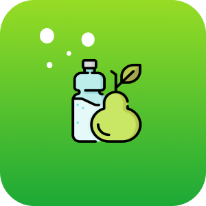
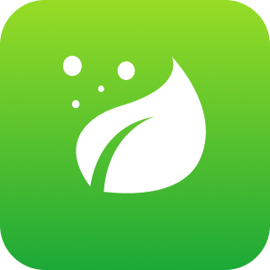
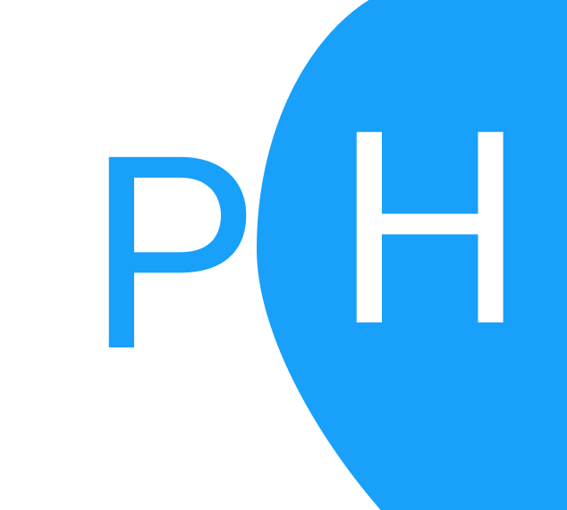

MY TAG
MyTag é uma carteira digital contendo as principais redes sociais do usuário, tem como objetivo facilitar o acesso e o compartilhamento entre as pessoas.
Porjeto destinado a clonar o login e o cadastro do instagram.

Nutri2u
Aplicativo de nutrição, feito para o usuário calcular seu imc e tmb.

BioView
Participação no projeto do Pet-informatica da pucrs desenvolvendo as telas iniciais para o app de biologia

Teste Estágio
Projeto realizado para o estágo, consumindo API's em login e cadastro, formulários e tabelas